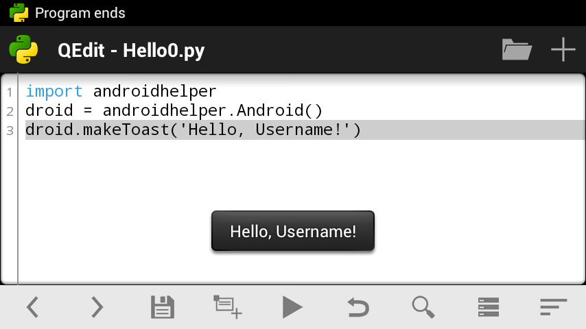

Writing “Hello World”¶
Hello world¶
Well, after you became a bit more familiar with QPython, let’s create our first program in QPython. Obviously, it will be helloworld.py. ;)
Start QPython, open editor and enter the following code:
import androidhelper
droid = androidhelper.Android()
droid.makeToast('Hello, Username!')
No wonder, it’s just similar to any other hello-world program. When executed, it just shows pop-up message on the screen (see screenshot on the top). Anyway, it’s a good example of QPython program.
SL4A library¶
It begins with import androidhelper — the most useful module in QPython, which encapsulates almost all interface with Android, available in Python. Any script developed in QPython starts with this statement (at least if it claims to communicate with user). Read more about Python library here and import statement here
By the way, if you’re going to make your script compatible with SL4A, you should replace the first line with the following code (and use android instead androidhelper further in the program):
try:
import androidhelper as android
except ImportError:
import android
Ok, next we’re creating an object droid (actually a class), it is necessary to call RPC functions in order to communicate with Android.
And the last line of our code calls such function, droid.makeToast(), which shows a small pop-up message (a “toast”) on the screen.
Well, let’s add some more functionality. Let it ask the user name and greet them.
More samples¶
We can display a simple dialog box with the title, prompt, edit field and buttons Ok and Cancel using dialogGetInput call. Replace the last line of your code and save it as hello1.py:
import androidhelper
droid = androidhelper.Android()
respond = droid.dialogGetInput("Hello", "What is your name?")
Well, I think it should return any respond, any user reaction. That’s why I wrote respond = .... But what the call actually returns? Let’s check. Just add print statement after the last line:
import androidhelper
droid = androidhelper.Android()
respond = droid.dialogGetInput("Hello", "What is your name?")
print respond
Then save and run it...
Oops! Nothing printed? Don’t worry. Just pull notification bar and you will see “QPython Program Output: hello1.py” — tap it!
As you can see, droid.dialogGetInput() returns a JSON object with three fields. We need only one — result which contains an actual input from user.
Let’s add script’s reaction:
import androidhelper
droid = androidhelper.Android()
respond = droid.dialogGetInput("Hello", "What is your name?")
print respond
message = 'Hello, %s!' % respond.result
droid.makeToast(message)
Last two lines (1) format the message and (2) show the message to the user in the toast. See Python docs if you still don’t know what % means.
Wow! It works! ;)
Now I’m going to add a bit of logic there. Think: what happen if the user clicks Cancel button, or clicks Ok leaving the input field blank?
You can play with the program checking what contains respond variable in every case.
First of all, I want to put text entered by user to a separate variable: name = respond.result. Then I’m going to check it, and if it contains any real text, it will be considered as a name and will be used in greeting. Otherwise another message will be shown. Replace fifth line message = ‘Hello, %s!’ % respond.result with the following code:
name = respond.result
if name:
message = 'Hello, %s!' % name
else:
message = "Hey! And you're not very polite, %Username%!"
Use < and > buttons on the toolbar to indent/unindent lines in if-statement (or just use space/backspace keys). You can read more about indentation in Python here; if-statement described here.
First of all, we put user input to the variable name. Then we check does name contain anything? In case the user left the line blank and clicked Ok, the return value is empty string ‘’. In case of Cancel button pressed, the return value is None. Both are treated as false in if-statement. So, only if name contans anything meaninful, then-statement is executed and greeting “Hello, ...!” shown. In case of empty input the user will see “Hey! And you’re not very polite, %Username%!” message.
Ok, here is the whole program:
import androidhelper
droid = androidhelper.Android()
respond = droid.dialogGetInput("Hello", "What is your name?")
print respond
name = respond.result
if name:
message = 'Hello, %s!' % name
else:
message = "Hey! And you're not very polite, %Username%!"
droid.makeToast(message)